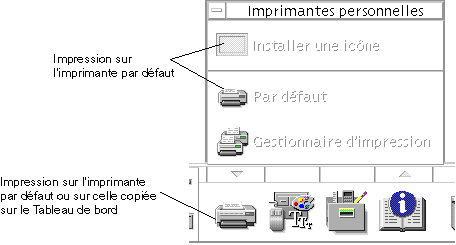
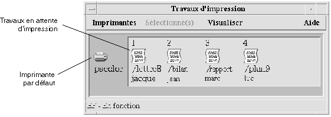

Le Bureau CDE fournit un moyen simple d'imprimer des fichiers, de rechercher et d'annuler des travaux d'impression, de consulter l'état des imprimantes et des travaux d'impression.
Votre imprimante par défaut191 |
Impression de fichiers192 |
Applications d'imprimantes197 |
Votre système peut disposer de plusieurs imprimantes accessibles. L'une d'entre elles sera désignée comme l'imprimante par défaut. Il s'agit de l'imprimante utilisée automatiquement par le Bureau lorsque vous lancez un document à l'impression et que vous n'indiquez aucun nom d'imprimante. Lorsque vous ouvrez le Bureau pour la première fois, l'imprimante par défaut s'affiche dans le Tableau de bord.
Pour afficher d'autres imprimantes que l'imprimante par défaut dans le Tableau de bord, reportez-vous à la section
Pour indiquer une autre imprimante comme imprimante par défaut:
Allez dans votre répertoire personnel et ouvrez le fichier .dtprofile.
Ajoutez ou modifiez la ligne définissant
la valeur de la variable d'environnement
export Si vous utilisez csh, la syntaxe est la suivante:
setenv
Cette modification prendra effet à la prochaine connexion.
Par exemple, la ligne suivante remplace l'imprimante par défaut par celle dont le nom est laser3d.
Si vous utilisez csh, la syntaxe est la suivante
:
|
|
|
Fichier texte |
Nom du fichier se terminant par |
Fichiers texte contenant du texte standard (ASCII) |
PostScript |
Nom du fichier se terminant par |
Fichier PostScript (exige une imprimante PostScript) |
PCL |
Nom du fichier se terminant par |
Fichiers PCL (requiert une imprimante PCL) |
Données |
Contient du texte |
Le type de données par défaut attribué à tous les fichiers contenant des données ASCII ne correspondant pas à d'autres types de données |
Si des applications créant d'autres types de fichiers sont installées sur votre système, l'administrateur système peut leur ajouter des fonctions d'impression.
Assurez-vous que l'imprimante supporte l'impression de fichiers Postcript
Plusieurs méthodes permettent de soumettre un fichier à l'impression:
à l'aide du Tableau de bord,
à l'aide du Gestionnaire de fichiers,
à l'aide du Gestionnaire d'impression,
depuis une application.
Faites glisser un ou plusieurs fichiers du Gestionnaire de fichiers vers l'icône Imprimante du Tableau de bord ou vers une icône Imprimante du panneau secondaire Imprimantes personnelles.
Le système affiche alors une boîte de dialogue Imprimer permettant d'indiquer les options d'impression. Une telle boîte de dialogue apparaît pour chaque fichier posé sur l'icône Imprimante.
L'imprimante pscolor ne s'affiche pas sur le système. Elle est seulement incluse en tant qu'exemple d'imprimante ajoutée à un système.
Facultatif.Utilisez les zones de texte de la boîte de dialogue Imprimer pour définir d'autres options d'impression. Reportez-vous à la section
Sélectionnez le fichier dans le Gestionnaire de fichiers.
Sélectionnez Imprimer sur le menu Sélectionné(s) ou le menu instantané du fichier.
Le système affiche une boîte de dialogue Imprimer permettant d'indiquer les différentes options d'impression.
Facultatif. Utilisez les zones de texte de la boîte de dialogue Imprimer pour définir d'autres options d'impression. Reportez-vous à la section
Lancez le Gestionnaire d'impression à partir du panneau secondaire Imprimantes personnelles.
Faites glisser un fichier du Gestionnaire de fichiers vers une icône d'imprimante du Gestionnaire d'impression.
Dans le Gestionnaire d'impression, vous pouvez soumettre un document à l'impression en le posant sur une icône d'imprimante ou sur la zone de liste des travaux située à droite de l'imprimante.
Si vous soumettez un travail à une imprimante qui ne fonctionne pas (alors qu'un indicateur vous le signale), celui-ci ne sera jamais imprimé bien qu'il apparaisse dans la liste des travaux.
Le système affiche une boîte de dialogue Imprimer permettant d'indiquer les différentes options d'impression.
Facultatif. Utilisez les zones
de texte de la boîte de dialogue Imprimer pour définir d'autres
options d'impression. Reportez-vous à la section Le Bureau affiche la boîte de dialogue Imprimer
lorsque vous imprimez des fichiers texte, PCL, Postcript et de données
(reportez-vous au Tableau 9‐1, page 193
Lorsque des fichiers d'application tels que des documents d'un traitement de texte sont soumis à l'impression, leurs propres boîtes de dialogue Imprimer peuvent s'afficher.
Utilisez la boîte de dialogue Imprimer pour configurer ces options d'impression :
Imprimante |
La destination du travail d'impression. La zone de texte affiche en premier l'imprimante sur laquelle vous avez posé le fichier de données. Dans cet exemple, le document est posé sur l'imprimantelj4_n5. |
Exemplaires |
Le nombre de copies à imprimer. La valeur par défaut est 1. |
Titre de la page bannière |
Titre figurant sur la page bannière. La page bannière correspond à une feuille de papier imprimée avant la première page du document. |
Imprimer les numéros de page |
Imprime les numéros de page sur chaque page. Si vous sélectionnez cette option, le Gestionnaire d'impression n'affichera pas le vrai nom du document. Le nom dans la liste des travaux sera STDIN:XXXXX, où XXXXX représente un numéro de 5 chiffres. |
Options des commandes d'impression |
Autres options modifiant l'impression. Pour plus de détails sur cette zone, reportez-vous à la section suivante. |
Utilisez
la zone de texte Options des commandes d'impression dans la boîte de
dialogue Imprimer pour définir d'autres options d'impression. Entrez
l'indicateur de commande lp approprié dans la zone
de texte correspondant à l'option d'impression que vous souhaitez utiliser.
Pour voir la liste des indicateurs de commande lp, entrez man lp dans une fenêtre de terminal.
Par exemple, l'un des indicateurs lp est -m. Cet indicateur signale l'envoi d'un message par le serveur
d'impression à la fin de l'impression du document. Pour utiliser cet
indicateur, tapez -m dans la zone Options des commandes
d'impression de la boîte de dialogue Imprimer. Puis, quand l'impression
du document est terminée, un message émis par l'imprimante s'affiche
dans votre boîte de messages.
Après avoir soumis un travail à l'imprimante, vous pouvez utiliser le Gestionnaire d'impression ou l'application Travaux d'impression pour vérifier l'état d'avancement des travaux. L'application Travaux d'impression vous renseigne sur les travaux en cours sur une imprimante. Le Gestionnaire d'impression liste chaque imprimante connectée au système.
La fenêtre du Gestionnaire d'impression est
affichée ci-dessous. Pour savoir comment la modifier, reportez-vous
à la section “Modification de l'affichage
du Gestionnaire d'impression“, page 205
Cliquez sur l'icône Gestionnaire d'impression dans le panneau secondaire Imprimantes personnelles du Tableau de bord.
Ou cliquez deux fois sur l'icône Gestionnaire d'impression du groupe Applications_Bureau dans le Gestionnaire d'applications
L'application Travaux d'impression est l'application visible lorsque vous ouvrez une seule imprimante à partir du Tableau de bord. Il s'agit d'une version simplifiée du Gestionnaire d'impression qui n'affiche qu'une imprimante et non toutes celles connectées au système. Les fonctions disponibles dans cette application fonctionnent de la même façon que dans le Gestionnaire d'impression.
Cliquez sur l'icône Imprimante du Tableau de bord.
L'imprimante pscolor ne s'affiche dans la figure qu'en tant qu'exemple d'imprimante ajoutée au système. Elle n'apparaîtra pas sur le panneau secondaire.
Les informations relatives aux travaux en attente d'impression s'affichent lorsque vous ouvrez une icône d'imprimante. Une zone située à droite de l'icône d'imprimante affiche une icône pour chaque travail en attente, et en ligne, sa position, son nom et son propriétaire.
Trois méthodes permettent d'ouvrir une icône Imprimante:
Cliquez sur le bouton Ouvrir situé à gauche de l'icône Imprimante.
Sélectionnez une imprimante, puis choisissez Ouvrir dans le menu Sélectionné(s) ou dans le menu instantané de l'imprimante. Ce menu s'affiche lorsque vous appuyez sur Maj+F10 ou sur le bouton droit de la souris.
Cliquez deux fois sur l'icône Imprimante.
Le travail ne s'affiche pas dans la fenêtre du Gestionnaire d'impression ou de l'application Travaux d'impression s'il n'existe aucun travail en attente lorsque vous envoyez le travail à l'imprimante.
Fermez l'imprimante si vous ne souhaitez pas voir les travaux en attente pour cette imprimante.
Cliquez sur le bouton Fermer [-] situé à gauche de l'icône Imprimante.
Sélectionnez une imprimante, puis choisissez Fermer dans le menu Sélectionné(s) ou dans le menu instantané de l'imprimante. Ce menu s'affiche lorsque vous appuyez sur Maj+F10 ou sur le bouton droit de la souris.
Sélectionnez Recherche dans le menu Imprimantes.
Cette option est disponible dans le Gestionnaire d'impression, mais pas dans l'application Travaux d'impression.
Entrez le nom du travail d'impression recherché dans la zone Nom du travail.
Par exemple, cat recherche tous les travaux dont
le nom contient la chaîne “cat”, tels que “Catégorie”
et “catalogue”, sans faire la distinction majuscules/minuscules.
Pour rechercher uniquement les travaux portant le nom “cat”, sélectionnez Correspondance exacte.
Pour rechercher des travaux en effectuant la distinction majuscules- minuscules, désélectionnez Pas de distinction maj-min.
Cette option recherche uniquement les travaux d'impression dont vous êtes le propriétaire. En revanche, elle effectue la recherche sur toutes les imprimantes, même celles qui ne sont pas listées.
Cliquez sur Démarrer recherche.
Lorsque vous avez trouvé un travail, vous pouvez y accéder directement dans le Gestionnaire d'impression ou l'annuler. Pour accéder au travail, sélectionnez-le et cliquez sur Aller à. Pour annuler le travail, sélectionnez-le et cliquez sur Annuler travaux d'impression.
Sélectionnez un travail d'impression dans la fenêtre du Gestionnaire d'impression ou de l'application Travaux d'impression.
Choisissez Annuler dans le menu Sélectionné(s) ou dans le menu instantané du travail d'impression. Ce menu s'affiche lorsque vous appuyez sur Maj+F10 ou sur le bouton droit de la souris.
Cliquez sur Oui dans la boîte de dialogue de confirmation.
nom du travail,
propriétaire du travail,
numéro du travail,
taille du travail,
heure de soumission du travail,
date de soumission du travail.
Le terme “non disponible” peut apparaître dans certaines zones pour indiquer que le système d'impression ne fournit pas ces informations.
Sélectionnez un travail d'impression.
Choisissez Caractéristiques dans le menu Sélectionné(s) ou dans le menu instantané du travail d'impression. Ce menu s'affiche lorsque vous appuyez sur Maj+F10 ou sur le bouton 3 de la souris.
Les caractéristiques s'affichent.
L'imprimante affichée dans le Tableau de bord est généralement l'imprimante par défaut. Vous pouvez choisir une autre imprimante ou ajouter une imprimante au panneau secondaire Imprimantes personnelles.
La procédure suivante ne modifie pas l'affectation de l'imprimante
par défaut. Pour savoir comment modifier l'imprimante par défaut,
reportez-vous à la section “Modification
de l'imprimante par défaut“, page 192
Ouvrez le panneau secondaire Imprimantes personnelles (en cliquant sur la flèche située au-dessus de l'icône Imprimante dans le Tableau de bord) et vérifiez que l'icône de l'imprimante que vous souhaitez amener sur le Tableau de bord apparaît.
Si l'imprimante n'apparaît pas dans le panneau secondaire Imprimantes personnelles, ajoutez-la en suivant les étapes de la section
Sélectionnez le mode d'affichage des travaux d'impression:
Grandes icônes – Affiche les imprimantes et les travaux sous forme de grandes icônes.
Petites icônes – Affiche les imprimantes et les travaux d'impression sous forme d'icônes réduites.
Nom uniquement – Affiche les imprimantes et les travaux d'impression sous forme de texte uniquement.
Informations – Affiche le propriétaire, la taille et le numéro de chaque travail, ainsi que la date et l'heure auxquelles il a été soumis.
Affichage libellés – Affiche la description de chaque rangée d'informations à gauche de la liste des travaux.
Le terme “non disponible” peut apparaître dans certaines zones pour indiquer que le serveur d'impression ne fournit pas ces informations.
Cliquez sur OK.
Choisissez Définir les options dans le menu Visualiser.
À l'aide de la jauge, indiquez la fréquence à laquelle les imprimantes sont interrogées sur leurs travaux d'impression. La valeur par défaut est 30 secondes.
Cliquez sur OK.
Choisissez Définir les options dans le menu Visualiser.
Sélectionnez les travaux à afficher :
Travaux personnels uniquement – Affiche uniquement vos travaux d'impression
Tous les travaux – Affiche tous les travaux d'impression.
Cliquez sur OK.
Choisissez Définir les options dans le menu Visualiser.
Sélectionnez Ligne de message pour afficher une ligne de message en bas de la fenêtre du Gestionnaire d'impression.
Cette ligne indique le nombre total des imprimantes installées sur le système et de celles actuellement masquées, ainsi que les dates de mise à jour des imprimantes.
Cliquez sur OK.
Choisissez Définir les options dans le menu Visualiser.
Sélectionnez Signal d'erreur pour afficher une icône Signal en regard des imprimantes pour lesquelles une erreur a été détectée.
Pour plus de détails sur l'incident, cliquez deux fois sur l'icône Signal.
Cliquez sur OK.
Choisissez Modifier la liste d'affichage dans le menu Visualiser.
Les noms des imprimantes visibles dans la fenêtre du Gestionnaire d'impression sont mis en évidence.
Cliquez sur une imprimante non mise en évidence pour la rendre visible dans la fenêtre du Gestionnaire d'impression.
Cliquez sur une imprimante mise en évidence pour la supprimer de la fenêtre principale. Vous pouvez également utiliser Tout sélectionner pour afficher toutes les imprimantes ou Tout désélectionner pour masquer toutes les imprimantes.
Cliquez sur OK.
Vous pouvez afficher les caractéristiques suivantes:
libellé d'icône,
icônes,
description,
file d'attente de l'imprimante,
état de la file d'attente de l'imprimante,
nom de l'unité,
état de l'unité.
Sélectionnez une imprimante dans la fenêtre du Gestionnaire d'impression ou de l'application Travaux d'impression.
Choisissez Caractéristiques dans le menu Sélectionné(s) ou dans le menu instantané de l'imprimante. Ce menu s'affiche lorsque vous appuyez sur Maj+F10 ou sur le bouton droit de la souris.
Sélectionnez une imprimante.
Choisissez Caractéristiques dans le menu Sélectionné(s) ou dans le menu instantané de l'imprimante. Ce menu s'affiche lorsque vous appuyez sur Maj+F10 ou sur le bouton droit de la souris.
Cliquez sur Rechercher ensemble.
Sélectionnez l'icône que vous souhaitez utiliser.
Si l'icône voulue n'est pas visible, sélectionnez un autre dossier dans le menu Dossiers icônes. Cette boîte de dialogue affichera uniquement les icônes existant dans les trois tailles.
Lorsque vous avez fait votre choix, cliquez sur OK
Cliquez sur OK dans la boîte de dialogue Caractéristiques.
Sélectionnez une imprimante.
Choisissez Caractéristiques dans le menu Sélectionné(s) ou dans le menu instantané de l'imprimante. Ce menu s'affiche lorsque vous appuyez sur Maj+F10 ou sur le bouton droit de la souris.
Entrez le nouveau libellé de l'icône dans la zone Libellé d'icône.
Cliquez sur OK.